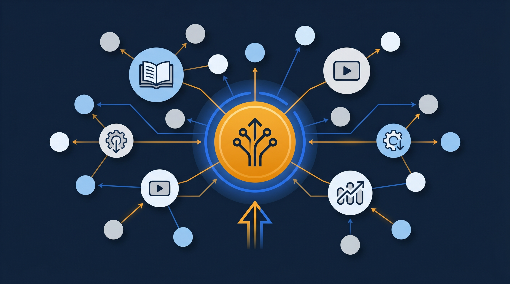
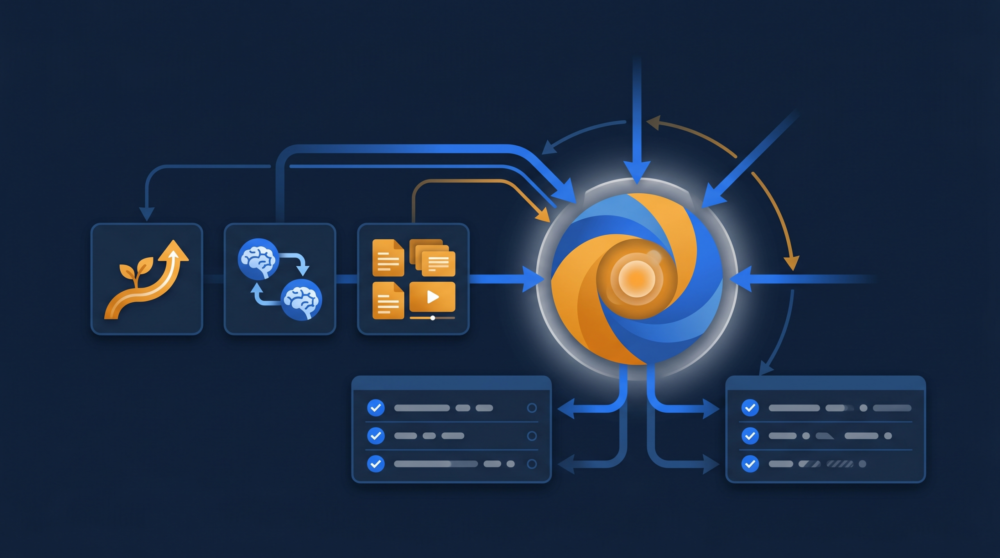
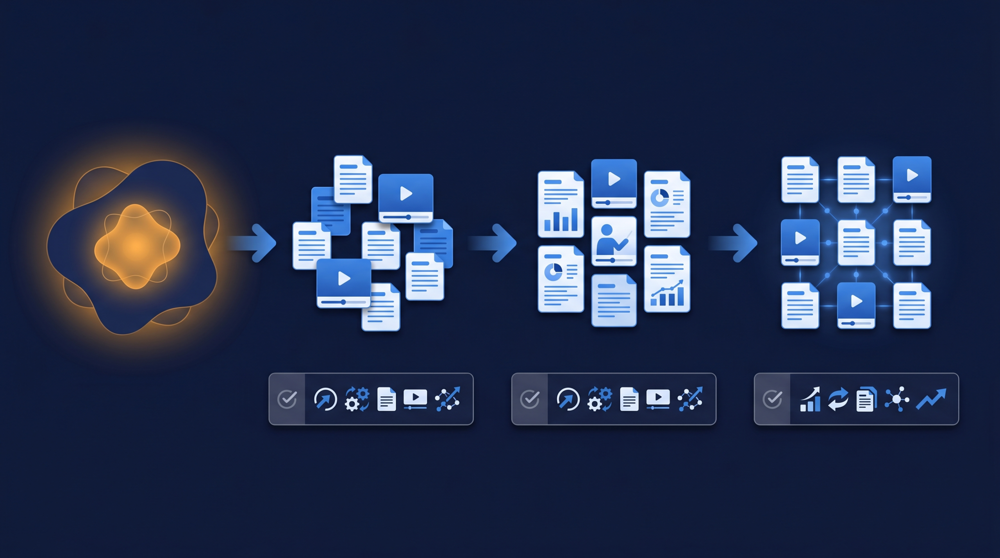

「あの人がいないと、新人に教えられない」——そんな状態になっていませんか。ベテラン社員の頭の中にしかないノウハウは、その人が休んだり辞めたりした瞬間に、会社から消えてしまいます。この記事では、OJTが特定の人に依存してしまう「属人化」の正体と、暗黙知を誰でも使える形に変えていく仕組みづくりを、現場目線で整理します。

OJTの属人化とは？まず言葉を整理する
OJTは On the Job Training の略で、実際の業務を通じて先輩や上司が後輩に仕事を教える、いわゆる「現場で覚える」教育のことです。日本の多くの企業で中心的な育成方法として使われていて、厚生労働省の能力開発基本調査でも、OFF-JT（業務を離れた研修）と並ぶ主要な人材育成の手段として位置づけられています。
ところが、このOJTには弱点があります。教える内容も、順番も、合格の基準も、すべて「教える人の頭の中」にしかない、という状態になりやすいんです。Aさんが教えると丁寧だけど時間がかかる、Bさんが教えると速いけど抜けが多い、というように、担当者によって品質がバラついてしまう。さらに困るのが、その担当者が不在になると、教育そのものが止まってしまうこと。これが「OJTの属人化」と呼ばれる状態です。
ここで大事になるのが、暗黙知と形式知という考え方です。暗黙知は、本人は当たり前にできるけれど、言葉にしようとすると説明しづらい、経験から染みついたノウハウのこと。「なんとなくこの順番でやると失敗しない」「この音がしたら一度止める」といった感覚的な部分です。一方の形式知は、それをマニュアルや手順書、動画など、本人以外の誰かが見ても再現できる形にしたものを指します。属人化を解いていく作業は、この暗黙知を少しずつ形式知に翻訳していくこと、と言い換えられます。
なぜOJTは属人化してしまうのか
そもそも、どうしてOJTは放っておくと属人化するのでしょうか。現場を見ていると、原因はだいたい次の3つに整理できることが多いです。
1. 教える内容が言語化されていない
一番大きいのがこれです。ベテランほど、作業が体に染みついているので、わざわざ言葉にする機会がありません。「見て覚えろ」が通用してしまうのは、教える側に十分な経験があるからこそで、裏を返せば、その経験が外に出ていないということでもあります。言語化されていないノウハウは共有できないので、結果としてその人だけが頼りになります。
2. 教える時間が個人の善意に任されている
OJTは多くの場合、通常業務の合間に行われます。教える側にとっては、自分の仕事を止めて後輩に付き合う時間です。きちんと教えるかどうかが本人のやる気や責任感に左右されやすく、「忙しいから今日は無理」となれば、その日は教育が進みません。仕組みではなく善意で回っている状態は、長続きしにくいものです。
3. 記録が残らず、改善されない
口頭で教えたことは、その場限りで消えていきます。誰がどこまで覚えたのか、どこでつまずいたのかが記録に残らないので、教え方を振り返って良くしていくこともできません。毎回ゼロから同じ説明を繰り返し、毎回同じところで新人がつまずく。この繰り返しが、教える側の負担をさらに重くしていきます。

属人化したOJTが招く弊害
属人化を「ベテランが頼りになっていい状態」と捉えてしまうと、対策が遅れます。実際には、組織にじわじわと負担をかけている状態です。代表的な弊害を挙げてみます。
- 教育担当者の退職・休職で、育成が一気に止まる
- 教える人によって新人の到達レベルが変わり、品質が揃わない
- ベテランが「教える業務」に追われ、本来の仕事に集中できない
- 新人が「誰に聞けばいいか分からない」状態になり、立ち上がりが遅れる
- ノウハウが社外に流出せず、社内にも蓄積されないまま消えていく
特に深刻なのが、退職にともなうノウハウの消失です。長く勤めた人が辞めるとき、その人が持っていた判断基準や工夫は、引き継ぎ資料の数ページには到底収まりません。技術やサービスの質を支えていた部分がそっくり抜けてしまい、後から「あの人ならどうしていたか」を誰も答えられなくなる。これは中小企業ほど影響が大きく、J-Net21などの中小企業向け情報でも、人材の育成と定着は経営課題として繰り返し取り上げられています。
もう少し身近な例で考えてみましょう。ある接客の現場で、クレーム対応がうまいベテランがいたとします。その人は、お客様の表情や声のトーンから、最初にどう声をかけるかを瞬時に判断しています。けれど、その判断の根拠を本人に聞いても「長年やってると分かる」としか返ってこない。これがまさに暗黙知です。本人が在籍しているうちは現場が回るので、誰も困りません。だからこそ、形式知化の手が後回しになり、いざその人が抜けたときに初めて「教えられる人がいない」と気づく。属人化のやっかいなところは、問題が表に出るのが手遅れになってから、という点にあります。だからこそ、困る前に少しずつ外に出しておくことが効いてくるのです。
暗黙知を形式知に変える4つのステップ
では、具体的にどう進めればいいのか。一気に全部を仕組み化しようとすると挫折しやすいので、次の4ステップで小さく始めるのがおすすめです。
ステップ1：形式知化する業務を1つ選ぶ
最初から全業務を対象にしないことが、続けるコツです。「その人が辞めたら本当に困る業務」「新人が毎回つまずく作業」を1つだけ選びます。範囲を絞ると、関わる人も少なく、短期間で結果が見えるので、社内の納得も得やすくなります。
ステップ2：ベテランの作業をそのまま記録する
選んだ業務を、ベテランが実際にやっているところをスマートフォンで撮影します。きれいな編集は後回しで構いません。手元の動き、声かけ、確認のタイミングなど、本人が無意識にやっていることほど価値があります。撮りながら「今、なぜそうしたんですか？」と聞いていくと、暗黙知が言葉になって出てきます。
ステップ3：見られる形に整える
撮った素材を、新人が見て分かる形に整えます。長い作業は工程ごとに区切り、要点をテロップや短いメモで添える。完璧な映像作品を目指す必要はなく、「初めての人が、これを見て一人でやってみられるか」を基準にすると、過不足のない教材になります。
ステップ4：確認テストと振り返りをセットにする
動画を見せて終わり、にしないことが定着の分かれ目です。見たあとに簡単な確認テストを用意し、理解できているかを測る。つまずいた箇所が分かれば、その部分の説明を足す。作って、使って、直すを回していくと、教材は使うほど良くなっていきます。

動画とLMSで「個人の善意」を「仕組み」に変える
ここまでの作業は、紙のマニュアルだけでもある程度はできます。ただ、文書だけだと「動き」や「コツ」が伝わりにくく、しかもどこに置いたか分からなくなって、結局また属人化に戻ってしまうことが少なくありません。
そこで効いてくるのが、動画と学習管理システム（LMS）の組み合わせです。動画は、手順や動作、間の取り方といった、文章にしづらい部分をそのまま見せられます。新人は分からなくなったら何度でも巻き戻せるので、ベテランに同じことを何度も聞かなくて済む。教える側の負担も、教わる側の遠慮も、どちらも減らせるわけです。
そしてLMSに教材を集約すると、動画・マニュアル・確認テストが1か所にまとまり、誰がどこまで学んだかも記録されます。これで教育は「あの人がいるかどうか」ではなく「仕組みがあるかどうか」で回るようになります。教えた内容が記録として残るので、人材開発支援助成金のように、研修の実施を証明する書類が求められる制度を活用する際にも整理がしやすくなります。
形式知化が進むと、現場はどう変わるのか
ここで少し、実際に動画とLMSで仕組み化が進んだ現場をイメージしてみましょう。たとえば、これまで新人が入るたびにベテランが付きっきりで3日間教えていた作業があったとします。仮にその3日のうち、半分が「毎回同じ説明」だったとしたら、その部分は動画に任せられますよね。新人は自分のペースで何度でも見返せますし、ベテランは空いた時間を、応用やその人の癖に合わせた個別の指導に回せます。教える総時間が減るだけでなく、教える中身の質まで上がっていく、というわけです。
ところで、形式知化には向く業務と、そうでない業務があります。手順がある程度決まっていて、繰り返し発生する作業ほど、動画やマニュアルにする効果が大きいんです。逆に、その場の状況判断が大きく関わる仕事は、すべてを教材化するのは難しい。ただ、そういう仕事でも「判断のための前提知識」や「よくある場面のパターン」は形式知にできることが多く、まったく手がつけられないわけではありません。完璧に置き換えようとするのではなく、置き換えられる部分から外に出していく、という発想が現実的なんですよね。
そしてもう一つ、見落とされがちな変化があります。それは、教材を作る過程そのものが、ベテラン自身の整理につながることです。「なぜこの順番なのか」を聞かれて初めて、本人も自分のやり方を言葉にできた、という場面は珍しくありません。属人化の解消は、ノウハウを外に出すだけでなく、そのノウハウを磨き直す機会にもなっているのです。
内製で形式知化を進めるときの注意点
最後に、社内で進めるときに気をつけたい点を挙げておきます。属人化の解消は、やり方を間違えると現場の反発を招くことがあるためです。
まず、ベテランに「仕事を取られる」と感じさせないこと。形式知化は本人の価値を下げる作業ではなく、「教える手間から解放する」取り組みだと、丁寧に伝えることが大切です。撮影や教材化の作業も、本人に丸投げせず、聞き取りながらこちらが引き受ける形にすると、協力を得やすくなります。
次に、完璧を最初から求めないこと。最初の動画は粗くて当然です。使いながら直していく前提で、まず1本作って共有してみる。動き出してしまえば、現場から「この作業も動画にしてほしい」という声が出てくることも多く、そうなれば自走が始まります。
そして、作った教材を一元管理すること。せっかく形式知にしても、各自のPCやチャットに散らばれば、また探せなくなって属人化に逆戻りします。教材は組織の資産です。1か所にまとめ、いつでも誰でも参照でき、更新もできる状態を保つことが、長く効かせるための条件になります。
まとめ：属人化を脱して、教育を「資産」に変える
OJTの属人化は、ベテランが頼りになっているように見えて、その人に依存しているという、もろさを抱えた状態です。暗黙知を形式知に変える——つまり、頭の中のノウハウを動画やマニュアルにして、誰でも使える形にしていくことが、その解決の核心になります。
一度に全部をやろうとせず、困っている業務を1つ選び、撮って、整えて、確認テストまでつなげる。そしてできた教材を学習管理システムに集約し、組織の資産として運用していく。この流れができると、教育は個人の善意ではなく仕組みで回り始め、人が入れ替わっても品質が保てるようになります。属人化の解消は、目の前の教育負担を減らすだけでなく、会社の知恵を未来に残す取り組みでもあるのです。
なお、こうした研修の動画化やeラーニングの整備には、人材開発支援助成金のように、訓練にかかった経費や賃金の一部を国が助成する制度を活用できる場合があります。仕組みづくりと費用面の両方から、自社に合った進め方を検討してみてください。研修を「作って終わり」ではなく「組織の資産」として育てていく——その第一歩として、まずは困っている業務を1つ選ぶところから始めてみるのがよいでしょう。
よくある質問
OJT（職場内訓練）の進め方や品質が、特定のベテラン社員の経験や勘に依存してしまい、その人がいないと教育が回らなくなる状態を指します。教える内容・順番・基準が個人の頭の中にしかなく、文書や動画として共有されていないことが原因になります。
暗黙知は、本人は実践できるものの言葉にしにくい経験的なノウハウのことです。形式知は、それをマニュアル・手順書・動画など、誰でも参照できる形に表したものを指します。属人化の解消は、この暗黙知を形式知に変えていく作業だと考えると整理しやすくなります。
完全に不要になるわけではありません。基本動作や繰り返し説明する部分を動画に任せ、現場では応用や個別のフィードバックに時間を使う、という役割分担が現実的です。動画はOJTを置き換えるより、OJTの土台を底上げする位置づけと考えるとうまくいくことが多いです。
まずは「その人が辞めたら困る業務」「新人がいつもつまずく作業」を1つ選び、ベテランの作業をスマートフォンで撮影するところから始めると着手しやすいです。最初から完璧な教材を目指さず、撮って共有して直す、を繰り返すほうが定着しやすい傾向があります。
「あなたの仕事を奪う」ではなく「あなたが教える手間を減らす」という伝え方が有効なことが多いです。撮影や説明の負担を本人にかけず、聞き取りながらこちらが教材化を引き受ける形にすると、協力を得やすくなります。
個人のPCやチャットに散らばると、結局どこにあるか分からなくなり、再び属人化します。動画・マニュアル・確認テストを1か所に集め、誰がどこまで学んだかを記録できる学習管理システム（LMS）に置くと、教材を組織の資産として運用しやすくなります。